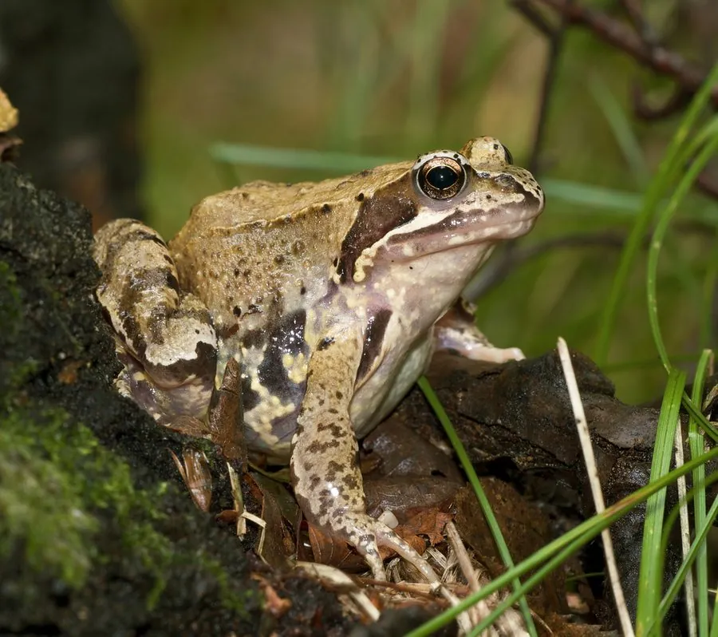

两栖动物 · 动物界
欧洲林蛙 Rana temporaria

欧洲最常见的蛙类之一，体色多变、善跳跃和游泳，春季在池塘中产下大团蛙卵，是欧洲湿地生态的常见成员。
- 分类
- 门脊索动物门纲两栖纲目无尾目科蛙科属林蛙属
- 栖息环境
- 欧洲的森林、草地、农田、公园与静水池塘
- 地理分布
- 欧洲大部分地区，从英国、法国到俄罗斯西部
- 保护级别
- IUCN 无危（LC）；非中国原产，在中国无保护级别
物种志
欧洲林蛙体长 6–9 厘米，雌蛙略大于雄蛙，头部宽圆，吻端钝，眼睛后方有深色的鼓膜区，体色变化很大，从黄褐、红褐到橄榄绿色都有，背部常带深色斑点，体侧有深色斑纹，腹部灰白并带浅色斑驳；后肢较长，善跳跃，趾间有蹼。
它广泛分布于欧洲的森林、草地、农田、公园与湿地，成体多在陆地活动，夜间捕食昆虫、蠕虫、蜗牛和蜘蛛；每年早春进入池塘繁殖，雄蛙鸣声低沉，雌蛙产下含 1000–4000 枚卵的大卵团，约 1–3 周孵化，蝌蚪经 2–3 个月变态。它是欧洲分布最广的两栖动物之一，在生态系统中既是捕食者也猎物；目前整体被评估为无危，但池塘消失、道路阻隔和农药使用仍是主要威胁。
形态与习性
- 食性昆虫、蠕虫、蜗牛和蜘蛛
- 体长6–9 cm
- 体重约 20–50 g
- 寿命约 5–10 年
- 繁殖卵生，每次 1000–4000 枚，约 1–3 周孵化
- 活动节律夜行性，白天藏于草丛落叶间
- 特点体色多变，善跳跃和游泳
趣味知识
- 欧洲林蛙是欧洲分布最广的蛙类之一，从平原到高山都能见到。
- 它产的卵聚成大团漂浮在水面，一团可有上千枚卵。
- 早春雄蛙会聚集在池塘里鸣叫求偶，是欧洲春季的常见景象。